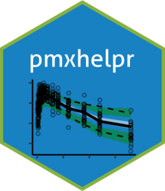

Test whether an object is a forest_stats container
Source: R/forest_stats_class.R
is_forest_stats.RdPredicate that returns TRUE if x carries the "forest_stats" class
– i.e., it is the container returned by df_forest() (also accepted by
plot_forest() and plot_build_forest() on the precomputed-stats
fast path).
Arguments
- x
Object to test.
- strict
Logical. When
TRUE, additionally runsvalidate_forest_stats()and returnsFALSEon validation failure. DefaultFALSE(class-tag check only, cheap).
Examples
set.seed(1)
draws <- expand.grid(
METRIC = c("AUC", "CMAX"),
COV = c("WTBL", "AGE"),
COVLVL = c("Low", "High"),
REP = 1:50,
stringsAsFactors = FALSE
)
draws$VALUE <- rlnorm(nrow(draws), 0, 0.2)
stats <- df_forest(
draws,
metric_name_var = "METRIC",
cov_name_var = "COV",
cov_level_var = "COVLVL",
metric_value_var = "VALUE",
cov_name_ref = NULL
)
is_forest_stats(stats) # TRUE
#> [1] TRUE
is_forest_stats(as.data.frame(stats)) # FALSE -- coerced to plain frame
#> [1] FALSE